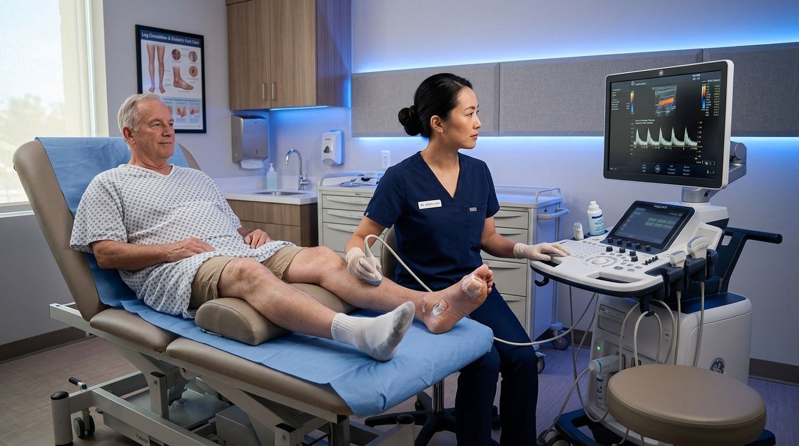

Diabetic Foot Ulcer Salvage & Debridement
Diabetic foot ulcers represent severe chronic open wounds caused by peripheral neuropathy and arterial insufficiency. Dr. Sapna Pandya applies hospital-grade sharp surgical debridement to clear non-viable tissue, Total Contact Casting (TCC) offloading, bacterial biofilm eradication, and advanced bio-engineered skin grafts.

Vascular DiagnosticsVenous & Arterial Leg Ulcer Management
Lower leg ulcers often originate from severe venous hypertension or peripheral artery disease (PAD). We conduct non-invasive Doppler vascular exams right in our office to evaluate blood perfusion, followed by multi-layer compression wraps, fluid exudate control, and arterial tissue oxygenation support.
Bio-Engineered Skin Grafts & Amniotics
When stubborn chronic wounds fail to close with standard topical wound dressings, advanced regenerative medicine provides the solution. Dr. Pandya applies FDA-cleared placental amniotic fluid matrices, human cellular skin substitutes, and collagen scaffolds that reactivate stalled healing cascades.
 Post-Op Recovery
Post-Op Recovery
Surgical Wounds & Post-Amputation Stump Care
Post-operative surgical incision breakdown (dehiscence) or healing failure following partial foot amputation requires specialized podiatric surgical oversight. We utilize Negative Pressure Wound Therapy (NPWT/Wound VAC), stump line reshaping, and barrier skin preservation for prosthetic readiness.